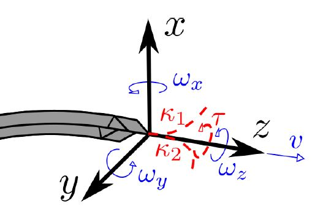

Neural Network for predicting ablation path in LiTT
Minimally invasive surgery (MIS) is a popular topic of discussion in the past decade, as it brings about benefits such as reduced recovery times, reduced risk of infection, reduced pain for the patient and much more. However, MIS also reduces the surgeon’s vision and makes it difficult for them to gain a holistic view of the target anatomy. Furthermore, medical doctor’s fatigue due to repetitive operations also reduces the quality of the surgery, especially if it needs to be conducted over a long period of time. Hence, recent developments in MIS have been centered around making operations more fluid, more autonomous and computer assisted (via the use of robotics and Augmented Reality), which harnesses the power of control systems or otherwise to optimize the process.
One of the factors in achieving a successful MIS is path planning, where the path taken by a surgical instrument (mounted on a robot or otherwise) to reach its target position is determine prior to surgery(planning), and during the surgery, the algorithm modifies the path slightly to account for unexpected changes in the target anatomy (navigation).
In this project, I had the honor of working with PhD students within the Mechatronics in medicine lab (MiM) at Imperial, to explore their path planing algorithm and software. One of the flagship projects that MiM is running is called EDEN 2020, which is a steerable soft bevel tip needle that is dedicated towards performing neurosurgeries deep within the patient's body, such as in traditionally difficult to reach positions in the brain. As a result, this system is currently being trialed in laser interstitla thermal therapies (LITT), which is essence is a surgical procedure that used laser to heat up critical tissues in the brain, in an attempt to treat mesial temporal lobe epilepsy, whilst avoiding open-surgeries.
My task was to program an artificial neural network which takes in an pre-operative and post-operative MRI images from the patient along with the programed parameters used to generate the planned trajectories, and use an aritificial neural network to decide on the optimal trajectory which will minimize laser tissue damage on the patient. This project has just begun hence more information is coming in due course!